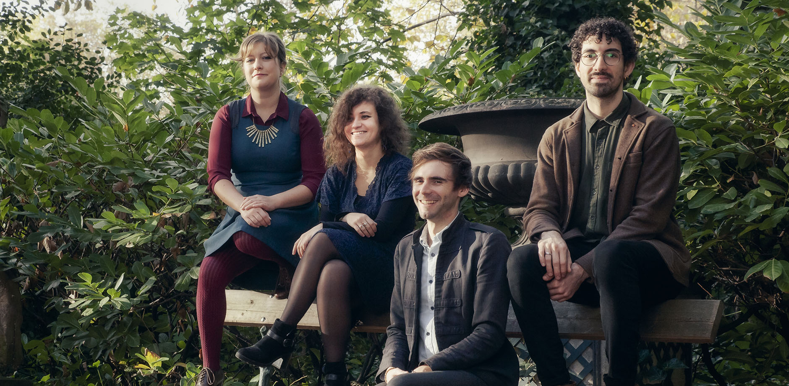
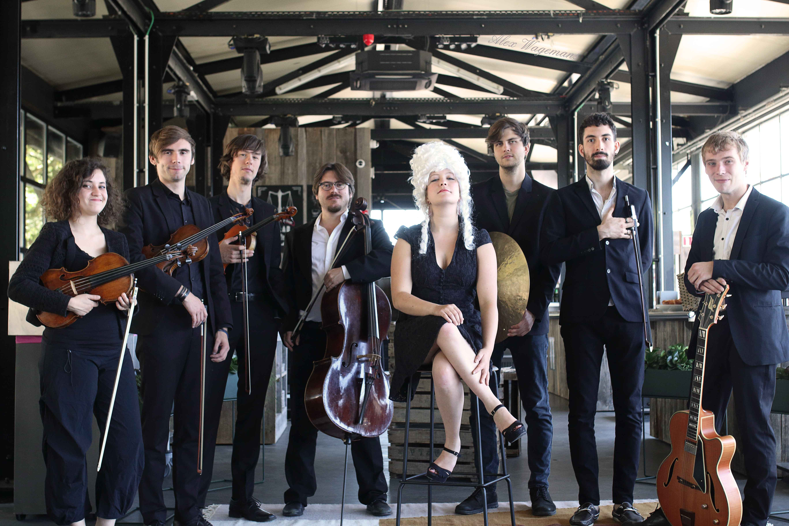
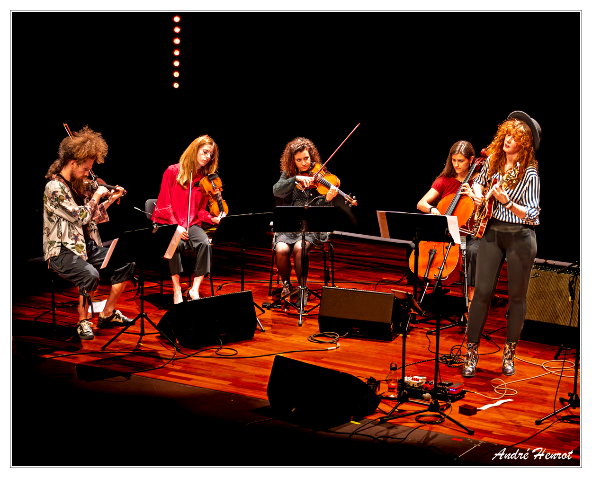
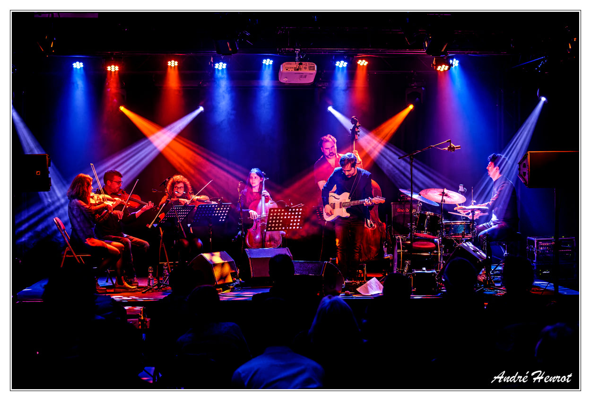
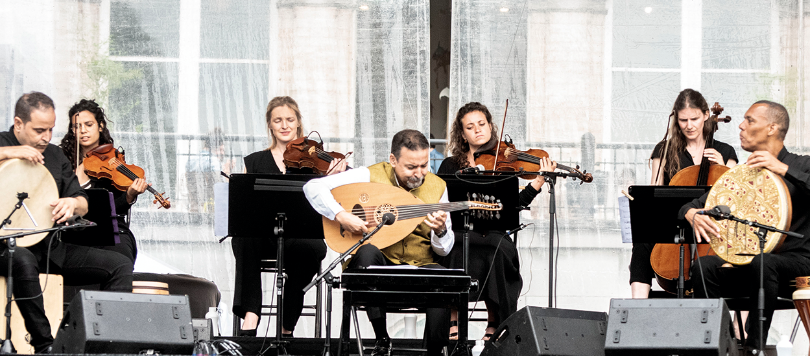

Classique

Les 4 saisons
Six artistes vous proposent de (re-)découvrir cette œuvre, arrangée pour l’occasion pour deux violons, un alto, un violoncelle, une contrebasse et… une guitare ! Un défi de taille, avec des musiciens de talent qui vous offriront une interprétation aussi épurée que chaleureuse dans une version inédite.
Classique & Jazz

Bluesy Mary
Bluesy Mary est un projet à la croisée des mondes classique et jazz, ayant la particularité d'avoir comme point de départ, en grande partie, des chants issus du répertoire classique. Cette fusion est rendue profonde et subtile par le lien entre le jeu de célèbres musiciens jazz et les spécificités de chaque morceau classique. Ainsi, par exemple, le jeu de Bill Evans se lie à "la Méditation de Thaïs" de Massenet, les balades de Nat King Cole à "Après un rêve" de Fauré. Le tout étant de rendre ces deux mondes accessibles à tous par le biais de sonorités et thèmes inscrits dans le conscient et/ou l'inconscient collectif.

Pauline Leblond Double Quartet
Le double quartet trouve ses racines quelque part entre Duke Ellington et Johann Sebastian Bach, ou peut-être entre Miles Davis et Henry Purcell. Le Pauline Leblond Double Quartet est une famille de huit musiciens, qui ont construit des ponts entre le jazz et la musique baroque. C’est un subtil mélange entre un quatuor à cordes et un quatuor de jazz, qui tantôt s’opposent, tantôt fusionnent. Ensemble, ils jouent des compositions originales de la trompettiste Pauline Leblond. Les contrastes de timbres, de couleurs et de sons rappellent des images oniriques, voire cinématographiques.

Veda & The String Machine
Pour ce projet, la musicienne et compositrice Veda Bartringer vise à chercher des nouvelles sonorités en incluant un quatuor à cordes à côté du quartet. Les compositions sont un mélange entre musique classique et jazz. Il est important pour la musicienne d'inclure le savoir en musique classique qu'elle a acquise au conservatoire avant et pendant ses études en musique jazz. La musique classique représente le début de la carrière pour la musicienne : elle a pris des cours d'harmonie, de contrepoint, d'arrangement et étant professionnelle aujourd'hui, elle veut inclure ce savoir dans les nouvelles compositions.

Moon Souvenirs
Le trio de cordes Moon Souvenirs mélange délicatement des morceaux composés avec des moments d’improvisation, créant un paysage sonore magique et émouvant. A l’occasion de ce concert, le groupe présente ‘Memory Log Suite’ leur premier opus. Cet album est un hommage au pouvoir des souvenirs et aux émotions qu'ils évoquent. Ancré dans le classique et le jazz mais s’imprégnant d'autres influences telles que la musique folk, brésilienne et rock, chaque morceau de cet album est un voyage à travers différentes pensées et sentiments, comme une errance sur la Lune.

ARCO
Le guitariste Lorenzo Di Maio (Octave de la musique en 2017) nous revient avec une formule classique du trio contrebasse-batterie-guitare à laquelle il joint un quatuor à cordes. Cette association offre à sa musique une combinaison de couleurs et de textures sonores immensément riches. Agrémenté de la poésie de ses interprètes, le groupe dévoile un répertoire aux ambiances contrastées qui crée une passerelle entre la pureté acoustique des cordes et les atmosphères électriques de la guitare.
Classique & World Music

Details
Le ’magicien du oud’ marocain originaire d’Agadir Driss El Maloumi qui s’accompagne ici de ses deux percussionnistes Saïd El Maloumi et de Lahoucine Baqir pour ce projet, réunit cinq musiciens belges pour concevoir un univers musical alliant le classique européen à la musique arabe ! Le Watar Quintet qui est composé de Amèle Metlini (1erviolon), Silvia Bazantova (2eviolon), Marie Ghitta (violon alto), Annemie Osborne (violoncelle) et d’Adrien Tyberghein (contrebasse) apporte ainsi tout l’univers des cordes classiques aux percussions et surtout au oud (un luth) cet instrument à cordes pincées répandu dans les pays arabes, en Arménie ou en Grèce.
Classique & Électro

Sopa Boba
Projet belgo-néerlandais porté par G.W.Sok (The Ex), Jean Vangeebergen (dramaturge) et par Pavel Tchikov (Ogives), celui-ci se décline en une étonnante combinaison entre lignes de synthés et travail d’un quatuor à cordes sans oublier du spoken word (narration, lecture) ! Le premier album de ce concept, est basé sur le texte éponyme de l’autrice moldave Nicoleta Esinencu, son adaptation musicale et narrative de cet écrit surprend tout d’abord par des sons industriels et des effluves synthétiques ! Ensuite, les instruments à cordes entrent en action puis arrive la narration, qui complète un tableau sonore étonnant voire surprenant.
Classique & Jeunesse

Le grenier de Madame Léon
Madame Léon, professeure de musique excentrique, se trompe de salle et se retrouve face à un public à qui elle croit devoir donner une conférence sérieuse. Seulement voilà : cet auditoire est venu assister à un spectacle et de fait, elle décide de rester et de lui partager sa passion pour la musique. Munie de sa baguette de chef d’orchestre et de sa montre magique, elle entraîne alors les petits dans un voyage dans le temps, empli d’humour, de fantaisie… et bien sûr de musique !